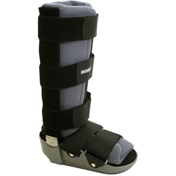
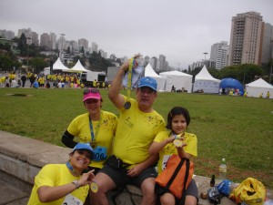

Cia. Ex-sedentário
vamo, vamo, vamo…

Na equipe dos blogueiros Taeq, tinha a Marisa muito bem humorada que deu o tÍtulo “Tartaruga de Elite” a um de seus posts. Segundo ela, éramos importantes por termos sido escolhidos, mas éramos lentos. Ao ver minha performance de 6 km em 1 hora, lembrei do fato.
Pois então. Segunda, feriadão, a Andrea (minha mulher) precisava atender a uma cliente. E me sugeriu treinar enquanto ela atendia. E era para os lados do Demarchi em São Bernardo. Treino em ambiente diferente sempre é legal. E lá fui eu. Adorei o empurrãozinho, principalmente porque fazia 2 semanas que não treinava.
Para mim tinhamos planos com algumas subidas e descidas, mas ao ver a altimetria do percurso… Não tinha planos…  🙂
Os tempos foram: 20:06 correndo, 4:52 andando subida, 28:33 correndo, 7:01 subidão andando. Total de 1 hora.


")
 Inscrição já está feita… Só falta a vergonha na cara! 🙂
Inscrição já está feita… Só falta a vergonha na cara! 🙂
Faz muito tempo que não relato treino. Mas o de hoje merece registro, porque foi especial demais. Não que os últimos não tenham sido. Mas o de hoje, mais do que treino-objetivo, o objetivo de hoje foi aproveitar as maravilhosas companhia de amigos, desfrutar de lugar novo para correr e altamente desafiador.
Um percurso de 9km muito bonito e desafiador, veja a encrenca cliclando aqui.
Corri com o Fabão e com a Elis. E do nada (a Elis fez surpresa) apareceu a Dona D. Eu me diverti muito, mas confesso que se não fosse pelas companhias não se sei se teria subido as tres últimas subidas. Enquanto meus pares corriam eretos minha cabeça já pendia a frente. Mas no meu peito havia muita satisfação.
Vejam as fotos e mais versões sobre o mesmo mega treino, que, para mim, valeu mais do que uma prova oficial. Foi uma grande prova de aventura e amizade. Estou curioso para saber como as minhas pernas reagirão amanhã pela manhã. Mas a felicidade instalada no meu peito ficará por um bom tempo. Obrigado amigos.
Vejam o Blog do Fabão, depois o Blog da Dona D e vejam mais no Blog da Elis.
Lá tem fotos muito legais que pretendo colar aqui também.
Foram os 18kms mais intensos que já corri. Intensos em visual, dificuldade e prazer.

           Depois do acidente fiquei literalmente de molho lendo e assistindo alguns programas de TV. A muleta que me emprestaram era tamanho G o que deixou alguns hematomas embaixo do braço, enfim, nesta fase tudo faz parte.
           Na quarta meu tornozelo ainda estava inchado. Tratei de marcar ortopedista rapidamente para reavaliação, ainda bem que consegui pela hora do almoço, mas se precisasse ficar plantada no consultório não haveria problemas, precisava era saber o agora  Â- apesar de já ter rodado o Dr. Google, restava a ressonância magnética para saber o estado do tornozelo e somente com esse resultado saberÍamos a extensão da lesão.
           Realmente, foi pedido RM e também foi explicado que dependendo da extensão seria solicitado fisioterapia, mas tudo depois da RM, foi trocado o antiinflamatório e usar imediatamente Robofoot ( uma bota monstrenga mais paracido ROBOCOP! — ah, a da fotinho) para ficar com o pé num ângulo de 90º, gelo e continuar com o repouso e perna para o alto.
           Ainda bem que moro em Sampa onde a cidade não para e consegui marcar a RM para o mesmo dia as 23 hs (uma clÍnica que trabalha 24 hs, bárbaro demais esse tipo de atendimento). Fiz a RM e pedi urgência na entrega do resultado para retorno a ortopedista.
           Agora novo embate, se ficar em repouso absoluto com a perna elevada calçando o bendito robofoot já era um transtorno, não há idéia de como seja dormir com ele!! Preguei os olhos de sono e cansaço. Acordei cedo e fiquei na expectativa do dia passar. Um pouco antes do meio-dia fiquei logada no site da clÍnica aguardando o laudo da RM, e também liguei para reforçar o pedido de urgência, obtendo a confirmação de que sairia logo, naquela tarde seria entregue o laudo e imagens.
           O resultado saiu na internet, li e fui procurar o verdadeiro significado dos termos técnicos na internet. Um pouco antes disso, através de e-mail solicitei a ortopedista agendamento do retorno para hoje (05/11) e ela gentilmente respondeu que poderia me encaixar e determinou o horário (na Era da globalização, da tecnologia, as trocas de e-mails, quando é utilizada torna a vida bem mais prática, sem necessidade de telefonar, falar com recepcionista que perguntará ao profissional e depois retornará o chamado ou precisaremos ligar cobrando uma resposta), este canal instantâneo de comunicação já tÍnhamos estabelecido, AGORA, de posse do laudo, lido e relido, enviei e-mail para a orto e dizendo o que realmente estava sentindo: “Dra., estou angustiada, segue abaixo o resultado do laudo: – copiei – ”, não demorou muito a resposta, se eu poderia encontrá-la a tarde.
          Eu não queria acreditar no que li e ouvi sobre a tradução do laudo que uma amiga minha médica havia feito a meu pedido, agora a solicitação de ir ao hospital ainda naquela tarde fez meu mundo cair……. respondi que sim e que faltava apenas a imagem……. aguardei a resposta e como demorou liguei para o hospital, recebi a confirmação de que ela estaria clinicando, rapidamente me vesti, pedi a Melinha aos prantos para ir buscar o resultado e me encontrar no hospital.
           Indo para o hospital meu coração batia mais rápido do que o de uma lebre tentando se salvar para não ser caçada…….. minha amiga aqui do condomÍnio me acompanhou, tentou desviar meus pensamentos…, eu ligando para Melinha para saber onde estava e depois de vários transtornos sobre a entrega do resultado Melinha já estava a caminho. Chegada minha hora a orto me chama e falou sobre ter lido o laudo, me tranqüilizou e explicou os procedimentos, respondeu minhas indagações, enfim, afastou todo aquele monstro que eu havia pintado em minha mente……… já estava mais calma, Melinha entra na sala, a orto examina as imagens, mostra o que aconteceu……..
           Enfim, rompi um ligamento do tornozelo e outro rompimento parcial de alto grau, mostrou-me que estou com água perto das lesões e que se eu não tivesse colocado gelo de imediato e deixado a perna elevada o estrago seria maior, recomendou fisioterapia para a inflamação, não pisar no chão e para isso devo fazer uso de muletas, posso fazer aplicação de bolsa de gelo várias vezes ao dia, utilizar emplasto, gel antiinflamatório e retorno em 3 semanas.
           Depois talvez ela possa liberar alguma atividade fÍsica, mas corrida ou esporte que possa sobrecarregar os pés somente no final do tratamento que não sabemos ainda quando será porque tudo dependerá de como meu organismo reagirá a tudo isso e em quanto tempo.
           Voltei para casa super aliviada, porque cirurgia só se realmente for necessário por ser invasivo e não entende ser o caso neste momento, ela aposta que o tratamento dará resultado.
           Também acho, creio no poder que o nosso corpo tem de se regenerar e para isso é necessário tempo, ainda mais com a extensão da lesão sofrida.
           Fico alguns dias mais em repouso e segunda devo iniciar as sessões de fisio. As corridas em que eu me inscrevi estou repassando para o noro correr em meu lugar……….
           Darei um tempo ao tempo na esperança de não ser um tempo tão grande.
Â
           Bons treinos e boas corridas a todos!!!
Â
Â
Â

           Pensei neste feriadão prolongado em fazer uma caminhada forte e corrida em subida em Atibaia.
           Após ter cumprido meu dever cÍvico fomos para Atibaia, o tempo estava bom e no final da tarde resolvi jogar Badminton com Sy e depois farÍamos  um treino com pequenos tiros na rua.
           Bom, estávamos jogando badminton muito animadas há uns 30 min, rendendo até um bom suador. Avisei Syssi para evitar jogar a cestinha fora da quadra, pois tinha alguns formigueiros, cujas formigas tem uma picada tão ardida e dolorida e eu não queria ser vÍtima delas.
           Num bate e rebate, eis que eu igual à ilustração abaixo ao tentar rebater a cestinha,

pisei em falso no beiral da quadra que tem um desnÍvel para a grama, virei o pé direito e cai por cima!!!!!!!!!!!!! Só gritei de dor e pedi gelo para a Sy. Do jeito que cai fiquei !!!  Como ela demorava em voltar para a quadra, subi mancando, tirei o tênis e tomei uma ducha fria rapidamente. Mas não consegui colocar o pé no chão……. apliquei gelo e a dor continuava intensa. Não teve jeito e pedi ao maridão para me levar ao hospital.
            Até o hospital e enquanto aguardava para ser atendida fiquei com o pé para cima e com gelo no local. Fizemos Raio X, que não acusou nada e como o local estava dolorido o medico resolveu imobilizar o tornozelo por 3 dias, com repouso absoluto pelo mesmo perÍodo, receitou ainda antiinflamatório e analgésico.
           Era tudo que não queria, um simples jogo na quadra causou um repouso forçado e nem sei se poderei correr no próximo final de semana………… ainda sinto dolorido o local.
           Por fim……………. torci o tornozelo no Dia das Bruxas comemorado pelos americanos e ingleses, só restando um pensamento……………….. tinha Bruxa solta no meu pedaço!!!!!!!!!!!!!!!!!!!!
           Estou fazendo tudo que foi recomendado pelo médico para poder voltar logo para as ruas…………. e enquanto isso estou devorando um livro que me emprestaram, aliás, estou adorando-o, cujo assunto é o oposto de minha situação atual…………. o nome do livro?! Nascido para Correr.
Â
           Boa semana e até mais…………….
Â

O final do mes de outubro chegou trazendo o segundo turno das eleições emendando com o feriadão de Finados.
Neste mes participei apenas de uma prova num verdadeiro Domingo Legal, porque corri com a famÍlia.
Foi também um mes de superação, o Alex baixando seu IMC, o Claudião e Thiago fazendo seus longões em preparo para a maratona. Ah, tivemos ainda a notÍcia de que a Family Ex-Sedentário será representada na SS pela Melinha, Claudião e Alex. No balanço geral, foi um mes muito produtivo.
Novembro se aproxima e com ele um calendário cheio de provas difÍcil até de escolher, também será a estréia do Claudião em sua primeira maratona (de Curitiba), prova em que o Thiago se fará presente e  que anda sumido do blog.
Enquanto o calendário não roda, deixo alguns vÍdeos e texto do CR  para um “time” de  descontração, sendo que qualquer semelhança é mera coincidência….. 
Alongar depois de correr tem seus riscos
Já li várias vezes que alongar imediatamente antes de correr não traz vantagem alguma ao corredor, podendo até ser prejudicial. Depois da corrida o alongamento é agradável, para relaxar a musculatura, desde que seja feito sem exageros. Mas risco de dar algo errado sempre existe, como se pode ver neste vÍdeo.
The day after the marathon
Só quem já completou uma maratona sabe o que acontece no dia seguinte. É aquela coisa: descer escadas de costas, subir escada de lado, não conseguir se levantar depois de ficar muito tempo sentado etc. O nome do vÍdeo abaixo é †O Dia Depois da Maratona†e a frase que o finaliza, em tradução livre, é algo como “Isto é para a única parte do seu corpo que não te odeia neste momento: o seu coração”. O vÍdeo foi produzido pela patrocinadora da maratona de Londres de 2007. Confira no link
Um bom final de semana a todos, com o voto consciente e um maravilhoso feriadão com bons treinos a todos (ou não… rs … feriado = leseira)!!!

Corrida que marcou o meu inÍcio nas corridas, tenho ela com muito carinho. E este ano fará parte da estratégia de alcançar a São Silvestre. Foi minha primeira inscrição e o primeiro desafio em provas completado. A camiseta da corrida é a minha preferida, sempre uso ela nos meus treinos, tanto na rua quanto na academia.
Esse ano me ofereceram a inscrição. Aceitei na hora. E fui correndo faze-la…
Meu número de peito será o 12901. E dá-lhe emoção!
Não pediram para fazer jabá, mas como fiquei feliz com o presente. Mando aqui o:
Â
Â

        Â
 Â
        Para fazer as inscrições nessa corrida, evento que reúne toda a famÍlia e promove a saúde e o bem-estar em todos os sentidos, precisei pensar quem poderia correr com a Syssi o percurso de 1k já que o maridão seria compelido por livre, espontânea e forçada vontade correr 4k, percurso que eu e Melinha tÍnhamos escolhido.
        Depois de muito pensar….. eu, meio que faceira convidei Valéria para acompanhar a Syssi num percurso super agradável. Se pensarmos 1k não assusta quem nunca praticou esporte e, depois o kit é super recheado. Valéria titubeou um pouco, mas não resistiu aos meus encantos e concordou (rs). Já tinha uma acompanhante para a Syssi, agora restava o maridão…… pois quando ele empaca, não há cristo que o remova.
        O detalhe do maridão … aos poucos fui esculpindo seu psÍquico e o tempo foi meu aliado……  primeiro fizemos um teste de pisada e aproveitamos para adquirir o tênis para corrida (ele detesta tênis, porque acha que esquenta o pé, então esta foi a oportunidade perfeita!); ele tem me levado nos locais das corridas que já participei; fomos ao Parque Vila Lobos comemorar o niver do Claudião onde conversamos bastante com o Enio dos Baleias que contou o quanto pesava, como emagreceu e o gosto que adquiriu pelas corridas. O maridão também participou da prova do Combate contra o Câncer no Center Norte fazendo caminhada por livre pressão minha para acompanhar Syssi num percurso de 3k (pelas fotos acho que ele curtiu bastante). Na corrida de revezamento conhecemos e conversamos um cadinho com Paulo Mota e Thiago antes da corrida e depois ele e Syssi ficaram no ponto de encontro onde também pudemos conversar com os colegas integrantes da equipe (Fabio, Samuca, Luciano, Sr. Pedro), tudo isso acho que aquilatou sua vontade de participar de uma prova, embora ele desse sempre uma desculpa de que seu joelho pinçava, pois várias foram as minhas provocações para correr.
        No sábado durante o almoço eu e Melinha comentamos sobre a corrida e ele de pronto disse que não iria participar, até tentei seduzi-lo com uma bermuda dry fit que comprei para esta corrida. Sei que ele gosta de fazer charminho, então apostamos que o maridão não faria o percurso em 30 min. Eu, Melinha, Syssi e Ygor fomos buscar os kits, tal como em Salvador recheados de brindes dos patrocinadores, tendo como diferencial a entrega do chip descartável.
       Enfim domingo chegou, meu rádio despertou as 5hs15min o maridão rapidamente levantou-se da cama. Eu fui para a cozinha preparar o café da manhã e acordar as meninas. Quando voltei ao quarto ele estava fazendo alongamento. Nosso café da manhã foi por revezamento, embora eu tivesse deixado as roupas ajeitadas, os documentos, a máquina fotográfica no dia ainda fiquei perdida. Logo a Valéria estaria me ligando para dizer que estava chegando a nossa morada.
        Partimos então rumo ao Estádio do Pacaembu, pertinho de casa. O tempo estava nublado e sem sinal de chuva, o clima estava agradável.
         Já no local do evento, enquanto eu e Melinha colocávamos o chip descartável nos tênis de Valéria, Syssi e maridão um fotógrafo de um site de corrida quase caiu por cima de nós, minutos depois suas lentes nos flagaram naquele clima de festa.
 Â Â Â Â Â Â Â Â Â Â Â
           
        Aproxima-se o horário da largada, dei as recomendações a Valéria e Syssi para prestarem atenção na chamada da largada delas que deveria ser 10 minutos após a nossa, depois de concluÍda a prova nos aguardar. É a primeira prova delas, e em especial da Syssi que correria com adultos também, diferente das provas kids que são por baterias, não pude acompanhar esse momento dela, mas estava em boa companhia pois sempre existiu um bom entrosamento entre Val e Syssi.
        Eu, maridão e Melinha posicionamos para a largada e ficou acertado de que cada um faria sua prova. Dada a largada o maridão foi embora, Melinha ficou um pouco ao meu lado e também foi, fiz minha corrida tentando correr mais do que caminhar, de cara tem uma boa descida e puxei o freio para não desembestar, no plano corria um pouco mais forte e as vezes mais fraco. Perto do viaduto da r. Gal. Olimpio da Silveira dava para ver os corredores retornando, procurei pelo maridão e não o vi, igualmente a Melinha, um pouco depois do retorno encontrei o posto de hidratação, tomei uns goles e lá fui eu pela Av. Pacaembu em direção ao estádio, olhei no relógio e percebi que poderia fazer um tempo abaixo do realizado em Salvador, e assim foram os minutos seguintes entre passadas e olho no relógio. No final da avenida tem uma curva que dá acesso a Praça Charles Miller, no meio da subidinha meu gás deu sinal de estar no fim e como tem sido nos dias de corrida ouço aquele “Mããããe†olho para meu lado direito e vejo Syssi (no meio da muvuca consigo vê-la tal qual um olhar de falcão……rs)  faltam apenas poucos metros, respiro fundo e piso no tapete vermelho! O Portal acusava 31 min… !!!!!!!!!! UHUUUUUUUUUUUUUUUU……… consegui fechar esse circuito num tempo menor que o de Salvador!!!!!!!!!!
        Logo depois da linha de chegada à direita pego minha medalha, recebo uma bebida isotônica, o kit de frutas e vou ao encontro de Syssi e Valeria. Chego e pergunto a elas sobre a prova, Valeria simplesmente me diz que adorou, sento-me na calçada e logo  Melinha se aproxima dizendo ter visto minha chegada. Ficamos procurando o maridão, Valeria e Syssi dizem não tê-lo visto passar, temos a oportunidade de ver um cadeirante cruzar a linha de chegada  – é muita emoção e, todos que por ali estavam bradaram em homenagem à quele herói. Â

        Passavam alguns minutos cheguei a pensar que ele tinha errado o percurso e estaria fazendo talvez 8k. Não demora para o celular da Syssi tocar, era ele querendo saber de sua localização, acho que ele não ligou no meu celular imaginando que eu ainda estivesse na prova, pegamos nossas coisas e fomos ao encontro dele que estava em frente ao Estádio.
        Apesar do tempo nublado os termômetros acusavam 22°C, ele com o rosto corado disse que seu tempo foi 28 min., duvidamos bastante. Melinha chegou 29 min. Valeria e Syssi disseram que fizeram em 10 min., todos estávamos felizes com a prova, o percurso e o tempo.
 Â
     
        Diferente do que aconteceu na etapa de Salvador em que o resultado foi divulgado 3 dias após a prova e as fotos do evento não achei em site nenhum, o resultado aqui veio a galope, no cair da noite já estava no site, o tempo liquido: maridão com 00:27:35, Melinha 00:28:35, Eu 00:30:56, Syssi e Valéria 00:07:38.
        SaÍmos dali e fomos até a cidade universitária para ver e prestigiar o noro Ygor que estaria participando da ECORUN de revezamento com seus colegas de facul em  mais um domingo cheio de provas na cidade.
        No final o maridão nos supreendeu, Melinha fez uma ótima prova, eu consegui baixar meu tempo, Valéria e Syssi também marcaram sua participação no Dia de Domingo!
        Espero repetir o mesmo ritmo nas próximas provas.

“Esteja atento em melhora contÍnua: hoje melhor do que ontem, pior do que amanhã.”
 Â
link para o album de fotos:
    Hoje recebi um e-mail encantador, ou melhor, fascinante, a abertura de mais uma nova corrida…….. veja como está descrita no site “ (….) primeira edição da Jungle Run no Parque Chico Mendes em Osasco oferece uma opção ecologicamente saudável para atletas que buscam novos desafios e o bem estar proporcionado pela prática de atividades esportivas em meio à natureza. A expansão da corrida cross se torna evidente na medida em que atletas de todos os nÍveis procuram atividades diferenciadas em locais agradáveis e em contato direto com a fauna e a flora. (..)†(grifei)
    Uma corrida dentro de Sampa com caracterÍsticas de cross. Imaginem meus olhos na tela consumindo todas as informações da prova e meus dedos ávidos para fazer a inscrição, mas um, porém, contudo, todavia freou totalmente esse meu Ímpeto…………. a inscrição feita em outro evento – Sesc Interlagos – Corrida Rústica 2010, que dizem ser D ++.
    Tudo bem, na próxima estarei por lá no Parque Chico Mendes, para aqueles que não tem inscrição feita para o dia 28/11 e gostam desse tipo de corrida não os deixarei sem a indicação do site da Jungle Run: http://www.junglerun.com.br/desafio.cfm
Â
    Boas Provas.

Hoje eu acordei as 03:39 horas, com o relógio de pulso tocando. Aquele soninho gostoso, um frio perfeito para uma soneca ainda mais profunda. O que fazer? Se não existir uma motivação forte, nesse momento, voltar a dormir é o que acontece. Minha meta individual não era suficiente para me mover da cama nesse horário.
Mas me lembrei de algo mais encantador. Mais especial (não que minhas aspirações individuais não sejam). Eu me lembrei do Alecão, da São Silvestre. Do sonho que, juntos, vamos realizar de correr a São Silvestre. Lembrei do Alecão empolgado. Lembrei que nossa alegria contagiou mais gente. Lembrei da Ana Amélia, que estará conosco. Do meu irmão que virá de Presidente Prudente só para prestigiar este momento.
Fui tomado de uma felicidade tão grande que 04:15 eu já estava na rua correndo. Correndo feliz. Inclusive corri um vai-e-volta constante numa avenida reta que evito em todos os treinos. Hoje aquela reta não estava tediosa, porque éramos apenas e eu meus pensamentos focados na festa que será a São Silvestre. Eu corri por 1 hora. Cheguei em casa, troquei a roupa molhada. Fomos levar o Henrique para a casa da Vó. Tomei um cafezinho quente, sentado e tranqüilo, no sofá. Mas ainda não estava realmente bom. Seis e vinte horas, pela segunda vez eu saia para a rua: trotezinho bem leve, mas feliz, em direção a academia. Ainda corri mais 2km e fiz musculação para as pernas (eu consegui correr, parar, e voltar a correr, não foi fácil o segundo trote, mas aconteceu e bem, cheguei aquecido na academia, de forma que os 19 minutos que lá permaneci foram muito proveitosos).
Se o Alecão me dissesse que só correria a São Silvestre em 2016, eu esperaria, esperaria correndo, é claro, porque é isso que o Alecão deseja para mim.
Somos um time. Somos uma equipe. Já contagiamos mais gente. A Ana Amélia está feliz, hoje ela detém a mesma marca que o Alecão nos 5km. Todos vamos nos superar, mas uma superação através da Alegria. Alegria de estarmos juntos.
Se eu pudesse eu prometeria ao Alecão e a Ana Amélia que duas vezes por semana eu os tiraria da cama para um treino feliz, pegando-os pelas mãos. Mas eu não posso. Mas prometo, do fundo da minha alma, que serei eu, entre os 18 mil corredores da São Silvestre, o MAIS FELIZ, o MAIS ENTUSIASMADO corredor.
Será uma grande festa, que vale todo esforço de levantar mais cedo na primeira terça-feira do horário de verão. Dando de mão aberta na cara dele para mostrar quem manda na minha força de vontade de ser feliz.
.jpg "DSC01759 (576x1024)")
.jpg "DSC01792 (1024x576)")
.jpg "DSC01848 (1024x576)")
.jpg "DSC01873 (1024x576)")
.jpg "DSC01874 (1024x576)")
.jpg "DSCN5637 (1024x768)")


Nós somos 100 JuÍzo
Nós somos Baleias

{kind=link}
Últimos comentários